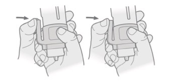

Conductivity Loggers
The protocol for calibrating/initializing, deploying, and offloading Data for conductivity loggers
Initializing Loggers
We use the HOBO Salt Water Conductivity/Salinity Data Logger to measure local changes in salinity, conductivity, and temperature where we sample oysters.
To initialize the logger:
First, make sure you have the Hobo Waterproof Shuttle and appropriate coupler (Blue COUPLER2-C for U22/U24/U26/U20L)
Make sure you have HOBOWare downloaded to your computer
Attach conductivity logger to the shuttle with the coupler. Align the arrows between the logger and shuttle coupler for proper connection
Use miniUSB to connect the logger to the computer. Unscrew white cap on shuttle to access the cord port
Open HoboWare
In the bottom left bar of the program you will see that the software recognizes your device (‘Dev: HOBO Waterproof Shuttle U-DTW-1…’). It will 1 device connected in lower right bar. This does not mean the shuttle has been properly started and connected
To properly start and connect the logger press the coupler lever

This starts the logger and you should see a ‘Installing device drive software’ message on your screen
When the software has been installed, it should then say ‘USB Input Device’
The device name in the lower left bar of the HOBOWare program should now be correct
To get some basic information about the logger, go to ‘Device’ in the menu bar, then choose ‘Status’ This gives basic information about the logger such as the device name, serial number, battery state, etc. ** You should use a Dixon standard (saltwater standard) to get an initial Conductivity reading form this Status pane before initializing**
To launch the logger, go to ‘Device’ -> ‘Launch’
Change the name to something meaningful like ‘20180615_Barnstable_conductivity’
Choose the logging interval and when to start logging (when the logger will be deployed) THIS IS VERY IMPORTANT: When you choose the logging interval, check the ‘Logs until’ time in the pane above it to see how long it will take before the storage runs out. If your interval is too small, the logger will fill up before you can offload the data and continue measuring
Click ‘Start’ and logger will launch
Unplug from the computer
Place rubber cap that comes with the logger on cylindrical end to prevent scratches
Deploying loggers
Materials you’ll need before deploying
Cinderblock
Metal tubing straps to attach PVC fixed loggers to
Zipties
PVC pipe large and long enough to fit logger, “swiss-cheesed’ with holes There must be enough holes for regular flow of water through the PVC pipe. The PVC pipe prevents large rocks and debris from damaging loggers
Rope and buoy
Glass bottles and 50 mL Falcon tubes. See this page for water sampling protocol
Before leaving for the field
Attach metal straps to cinder block
Attach PVC pipe to the metal rings that are fastened to the cinderblock
Label cinderblock, PVC pipe, buoy, and loggers with contact information (Katie’s)
Make sure you’ve contacted local shellfish constable to make sure they can keep an eye on the loggers
Deploying
Loggers should be deployed at low tide, so that we know they’ll be constantly exposed to water while logging
Before deploying, attach logger(s) to PVC using many zipties
Wade to waist-deep water at site of deployment
Deploy logger
Record time of deployment. If loggers start logging before they are deployed they give strange readings. It is good to know when the logger was actually deployed, so we know when logging was actually initiated
Record location using GPS
Take water samples
Last Steps
Add the geographic location, deployment time, and additional notes about site to the log file (should be a google doc- ask Katie)
Make sure field sample in glass bottle has been poisoned with Mecuric Chloride (Ries Lab) and place in freezer
Offloading Data
Data from loggers should be off-loaded about every two weeks
Materials you’ll need before going into the field for off-loading data
Glass bottle and 50mL Falcon tube fore water samples
HOBO Waterproof shuttle and correct coupler
Kimwipes
Wire cutters (to clip zipties)
Zipties- to reattached logger
Transferring Data to the Shuttle
Retrieve logger and record the time you collected logger
Detach logger from the cinderblock and make sure it’s is completely dry before hooking up to shuttle and coupler
Remove rubber cap
Connect logger to shuttle with coupler Make sure the shuttle cap to the USB port is tightly sealed when in the field to prevent any water damage
Press coupler level, the yellow ‘Transfer’ light should start blinking (if it doesn’t, you probably didn’t press the lever hard enough)
Once the transfer has completed the ‘OK’ light will start blinking, which means it is ready for relaunch
The green light will blink for 15 minutes before relaunching. If you want to relaunch immediately, press the coupler lever
The green ‘OK’ light should turn off, and the logger has been succesfully relaunched
Place the rubber cap back on the logger and reattach to the PVC pipe
Deploy
Record time of deployment
Take water samples THIS IS IMPORTANT, as this data will be used to correct deviations for salinity data
You do not do a calibration step before relaunching the salinity loggers like you do for the pH loggers
Offloading the Data
**You need the HoboWare Pro software to properly offload data from the shuttle. You can download the base version then get the license number from the Helmuth Lab (Francis) which you enter by selecting ‘Manage License Key’ under Help
Connect shuttle to computer with miniUSB cord. You DO NOT need to press coupler lever for offloading data from shuttle
Go to Device-> Manage Shuttle
A pane will come up with the device details for the shuttle. Any data that has not been offloaded will blink red. Select the data you want to offload by clicking the checkmark next to the file and click ‘Offload Checked’
Save by choosing a folder, change filename (especially if offloading from the same logger as it defaults to logger name), and click ‘Save Checked’
Once saved, the pane will return to the Files on Shuttle list
Click close and disconnect shuttle from computer
Notes
To save space on the shuttle you can click ‘Delete Checked’. The shuttle has 63 banks, but I’m not sure the size of these banks, so banks should be deleted after they have been saved and backed-up so the memory does not max out when you go to transfer data again